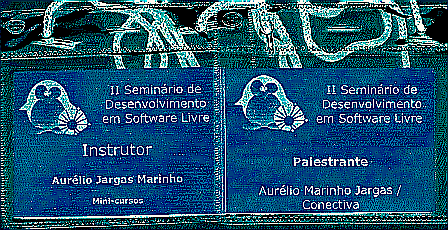
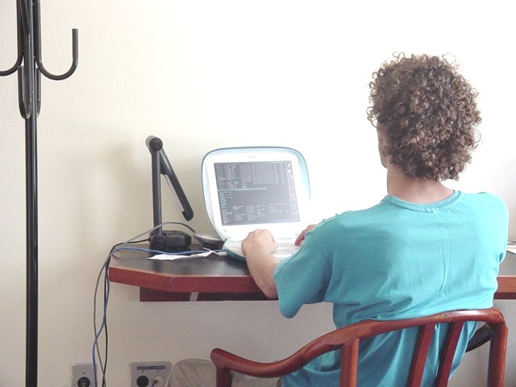
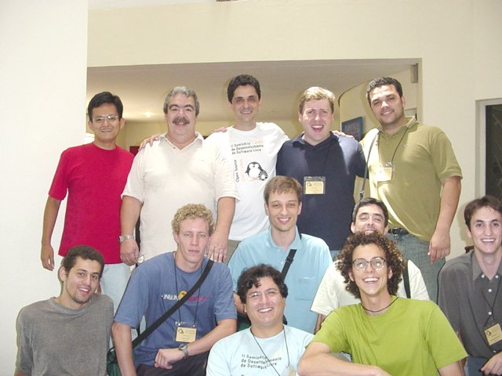
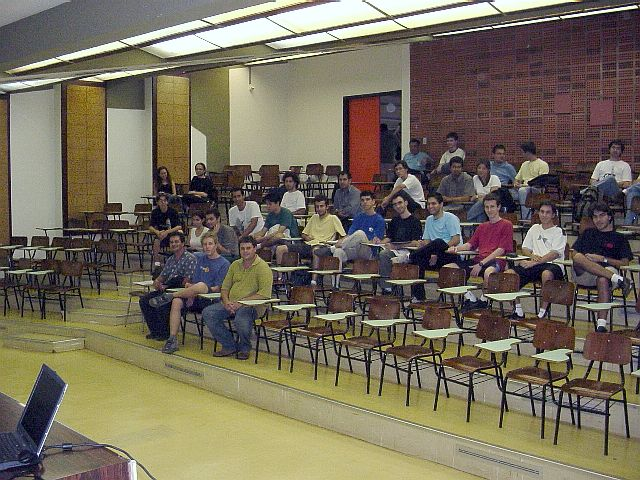
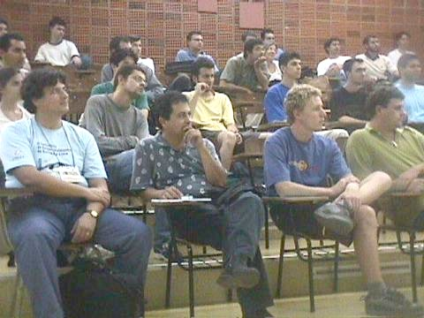
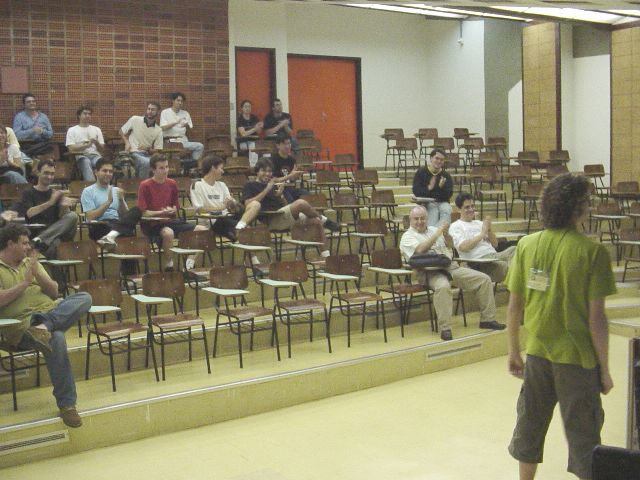
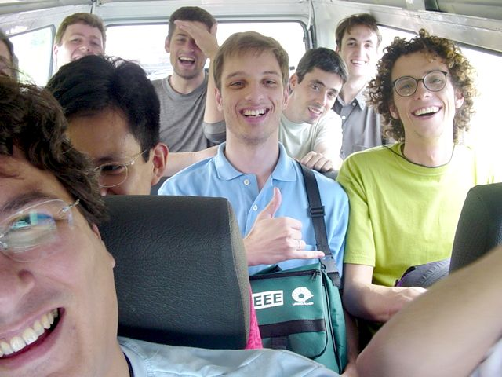
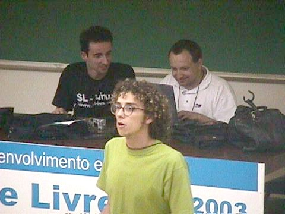

Durante os dias 9, 10, 11 e 12 de Dezembro de 2003 aconteceu em Campinas, na Unicamp, o II SDSL.
Eu fui convidado pelo amigo Rubens Queiroz a participar para ministrar um mini-curso de Expressões Regulares e uma palestra sobre desenvolvimento em Software Livre, com todas as despesas pagas.
Ambos ficaram marcados para a sexta-feira, último dia do evento. O curso foi do tipo dia todo, de manhã e de tarde para uma turma de 30 alunos e a palestra foi de noite, das 18:40 às 19:30 no auditório, para uma platéia de pouco mais de 30 pessoas.
Esta página é meu relato de como foi essa experiência.
Links para os materiais:
A Ida
Primeiramente, meus sinceros agradecimentos à Conectiva, empresa onde trabalho, por ter me liberado para ir ao evento.
A saída de Curitiba começou às 14 horas de quarta-feira dia 10, quando peguei o táxi para ir da Conectiva até a Rodoferroviária. De lá, fui de ônibus até o aeroporto. Às 16:20 era o horário de saída do vôo, pela Gol, que atrasou uns 15 minutos. O piloto deve ter judiado do avião, pois mesmo com o atraso na saída ele chegou em Campinas praticamente no horário :)
Desembarque, espera da mala, e na saída lá estava o motorista da Unicamp, o seu Oclair, me esperando e segurando um cartaz com o meu nome escrito. Engraçado isso de cartaz :) Mais 30 Km de carro, e finalmente: Unicamp.
Recapitulando:
- Conectiva → táxi → ônibus → avião → carro → Unicamp
A Unicamp
Pô, ninguém tinha me avisado que a Unicamp era tão grande!
Caramba, aquilo é um bairro cercado. Tem um monte de ruas, prédios, ônibus, movimento, até posto de gasolina tem! E para meu espanto, até o hotel em que me hospedei era lá dentro. E que hotel!

Lá fora, uma piscinona (que infelizmente não tive tempo de "testar"). Dentro do quarto, tudo novinho e impecável, sem luxo, mas com muito conforto. Tinha banheira, ar condicionado e TV à cabo!
E o melhor de tudo: rede local com acesso liberado à Internet. Tudo o que um nerd precisa para ser feliz. Foi só plugar o cabão de rede, configurar o IP e pronto, o iBook estava conectado com o mundo.
O Primeiro Dia - Palestra do Franklin
Como não fui lá pra ficar coçando, nem desfiz a mala e já fui direto para o local das palestras. Aliás, o Rubens mandou um carro pra vir me pegar, pois apesar do evento ser lá na Unicamp mesmo, era do outro lado do campus, lonjão!
Cheguei no final de uma mesa redonda de fazer inveja: Rubens Queiroz (Dicas-L), César Brod (Solis), Alexandre Oliva (RedHat) e Julio Cezar Neves (livro de Shell). O tópico não sei qual era exatamente mas a discussão era a mesma de sempre: como ganhar dinheiro com Software Livre :)
Cheguei no fim, mas valeu, o nível estava muito bom, inclusive com donos de empresas de software proprietário na platéia, expondo seu ponto de vista.
O Julio pra variar, não perdeu a oportunidade de me fazer passar vergonha. Quando me viu, pediu o microfone e "anunciou" minha chegada no auditório, falando coisas boas a meu respeito. Como não tinha terra para eu cavar e enfiar a cabeça dentro, tive que me contentar em ficar vermelho &;)
Depois da mesa, pausa para o lanchinho (que foi muito bom todos os dias!) e conversas de corredor ainda sobre o assunto "dinheiro versus SL".
Depois começou a palestra do amigo Franklin Carvalho, com quem esqueci de tirar foto (na próxima hein Franque!). O que posso dizer, foi simplesmente a melhor palestra que vi em todo o evento, disparado.
Aproveitando o tema da mesa anterior, o Franklin deu uma aula de história da informática, comentando sobre a origem e vida de várias das grandes empresas atuais e fez seus prognósticos sobre o futuro recente e distante.
Algumas de suas frases: "Não importa se é GPL", "O governo devia manter (financeiramente) a Conectiva e outros patrimônios nacionais em Linux, para não correr o risco de perdê-los" e "A China será o próximo império". Estou contigo amigo!
Depois da palestra, papo vem, papo vai e perdi o bonde para o hotel... Muito obrigado ao Alexandre Oliva por me dar uma carona! Quando finalmente pus os pés no quarto já era mais de 11 da noite.
O Segundo Dia - Curso do Julio
Acordei cedo, às 07:30. Cafézão da manhã no hotel e voltei para o quarto. Hoje é o dia do curso de Shell Script do Julio Neves, que irei participar.
Mas, como anunciei há tempos o lançamento de um software novo durante a minha palestra de amanhã, acabei passando a manhã toda trancado no quarto com o iBook, finalizando os detalhes desse lançamento.

O tal programa é o RAC, feito em parceria com meu amigo gaúcho Thobias. O software já estava pronto, mas ainda precisava fazer a sua página na Internet, preparar o pacotão tar com a versão 1.0 e escrever o texto de anúncio do programa.
Com a Internet na faixa no quarto, fiquei toda a manhã online conversando com o Thobias por ICQ e juntos finalizamos tudo. Essa tal de modernidade não é uma maravilha?
Com as pendências finalizadas, fui devorar um almoção classe A no restaurante do hotel, com tudo pago pela organização do evento. Depois do almoço, uma reunião do pessoal na recepção do hotel para tirar fotos:
 Em pé: Não sei, Julio Neves, Rubens Queiroz, Maurício de Castro, Leonardo Lemes ::: Fileira do meio: Ribamar Santarosa, Daniel Ferreira, Pablo Dall'Oglio, Marcelo Malheiros, Nasair Júnior Silva ::: Na frente: César Brod, eu
Nota 1: Me desculpe pelo "Não sei", mas eu realmente não sei seu nome. Me mande e-mail avisando!
Nota 2: O Ribamar da foto, é o "Accipitris Amici" que me convidou formalmente para integrar o Movimento Neofeudalista e ser o responsável pelo Meio Ambiente. Vida longa ao balde de madeira!
Já de volta ao evento, acompanhei a segunda metade do curso de Shell do Julio. Como sempre, um show de bom humor e conhecimento indispensável transmitido de forma tranquila e light.
A peculiaridade do curso foi o Fábio ter conseguido um mega crash em uma das máquinas Digital, com um simples comando "trap". As máquinas rodavam em esquema de Terminal Server com o Red Hat Linux.

Depois do curso, um intervalo rápido regado com uma chuva forte de verão e depois as vieram as palestras. Nessa noite assisti a do Djalma Valois sobre o CIPSGA e Filosofia GNU, e depois a do Alexandre Oliva também sobre GNU. Foi uma overdose de "Stallman isso, Stallman aquilo" mas eu sobrevivi :)
Carona com o Rubens para o hotel, e novamente depois das 11 eu estava pisando no quarto. Como estava pregadaço, deixei para tomar banho e arrumar as coisas do curso e palestra no dia seguinte. Péssima decisão...
O Terceiro Dia - Minha Vez de Ministrar Curso e Palestra
Como diz o ditado: "Nunca deixe para amanhã o que se pode fazer hoje". Eu sempre sigo isso, mas dessa vez falhei e me arrependi.
Fiz caca regulando o despertador e acabei desregulando-o. Resultado: ele não tocou e eu me atrasei. O curso começaria às 08:30, e esse foi o horário que eu acordei :/
Tomei um banho ultra rápido, arrumei as coisas na pressa e não pude tomar café da manhã, chegando na sala do curso às 08:50. Mas fora esse pequeno deslize, o resto do dia foi tranquilo e gratificante.
Curso de Expressões Regulares
 Turma do curso, foto tirada ao meio-dia
Turma do curso, foto tirada ao meio-dia
O curso foi muito bacana. Ele foi andando num ritmo tranquilo, e no fim do dia todos os metacaracteres básicos tinham sido vistos em detalhes.
O Rubens Queiroz fez a gentileza de me "apresentar" para a turma, falando um pouco sobre meu trabalho e sobre o Guia de ERs que escrevi. Valeu amigo!
Como a maioria da turma era "virgem" ou iniciante em Expressões Regulares (ERs), o curso foi introdutório, ensinando a base do assunto e como tudo funciona.
A apostila foi mais ou menos seguida, pois eu prefiro sanar as dúvidas no momento em que elas ocorrem, e isso às vezes adianta assuntos que só iam ser vistos mais tarde.
Este foi meu primeiro curso de Expressões Regulares, e considero a experiência um sucesso completo. O assunto é simples, porém de difícil assimilação e muito abstrato. Não adianta decorar comandos, é preciso realmente entender como funciona.
No início do curso, pedi para cada aluno dar um valor de 1 a 10 sobre o nível do conhecimento em ERs que ele julgava possuir naquele momento. Estes dados foram colocados no quadro branco. No final do curso, antes de ir embora, cada aluno colocava outro número ao lado de seu nome, que seria o nível após o curso terminado.
Meu objetivo pessoal era que todos, sem exceção, aumentassem pelo menos um ponto nessa escala. Nem todos lembraram de anotar o número no final, mas dos que o fizeram, todos aumentaram!
NOME ANTES DEPOIS
-------------------------
Adilson 3 5
Bruno 0 -
Bruno 3 7
Claudio 2 7
Dani 0 4
Daniel 6 -
Fabio 2 5
Fabricio 8 -
Glauber 6 8
Gustavo 1 -
Henrique 0 -
João 3 4
Kate 0 4
Leonardo 6 -
Luis 0 5
Marcos 4 -
Olav 2 -
Otávio 1 -
Pablo 0 -
Pedro 0 4
Renne 4 -
Ribamar 3 7
Ricardo 3 -
Silvana 2 5
Ulisses 3 6
Vlad 2 8
Wendell 3 6
Yuri 2 5
Ainda bem que ninguém diminuiu né? :D
Fora essa auto-avaliação, os alunos também preencheram aquelas fichas de avaliação do instrutor. Fiquei muito feliz ao constatar 100% de aprovação com os itens das fichas variando entre "Bom" e "Excelente".
É isso aí, mais nerds aptos a escrever Expressões Regulares! Vamos dominar o mundo!
Ah! No final do curso aproveitei para fazer "Verde Busine$$" e vendi nove Apostilas de Shell. Um estrondo de vendas! A cada apostila vendida, duas alegrias: o dinheiro que chega, e o peso da mala que diminui :D
Palestra Experiências de um Desenvolvedor de Software Livre
Do laboratório do curso direto para o auditório de palestras.
Como haviam três palestras simultâneas e o público presente não era tão volumoso para encher três auditórios, minha palestra e a do Felipe sobre o Kernel 2.6 foram unidas. Cada um usaria 45 minutos, e compartilharíamos do mesmo público. Uma ótima idéia!

Eu fui o primeiro, e o tema da palestra era contar as minhas experiências como um desenvolvedor de software livre há alguns anos. Meu objetivo principal com a palestra era incentivar e dar um gás para os programadores anônimos lançarem publicamente suas obras, participando da comunidade do Software Livre e colhendo os louros que isso gera.
Com o tempo reduzido, não pude entrar em muitos detalhes e fiz uma passada rápida pelos slides. Mas o recado principal foi dado, que SIM é muito gratificante fazer Software Livre e é possível até ganhar dinheiro com isso!
O dinheiro muitas vezes não vem diretamente com alguém lhe pagando para escrever um software, mas o fato de se mostrar e publicar seu trabalho para que todos vejam, atrai contatos, oportunidades, admiradores e esse networking todo gera muitos frutos.

Também foram passadas várias dicas de como lançar o software e como divulgá-lo, fazendo marketing que funciona sem gastar um tostão sequer.
Por falar em marketing, Lembra que eu ia lançar o RAC, programa novo, durante a palestra? Antes de chegar no primeiro slide dele o Rubens me sinalizou que o tempo da minha palestra já tinha acabado...
Com isso só pude falar que o nome era RAC, que era um extrator de textos e que o endereço da página dele era https://aurelio.net/rac. E não é que isso gerou ansiedade e curiosidade e também serviu como um marketing pesado para o programa? Vivendo e aprendendo... :)

Confira a apresentação completa, para saber mais sobre todos estes assuntos.
Aleatoriedades
O famigerado piá de 12 anos
Destaque para o mito do momento, que aterroriza a vida dos empresários de software. Citado em quase todas as palestras, o vil, o meliante "piá de 12 anos" é a nova ameaça à indústria de software nacional. Com toda sua genialidade florescendo e sem a preocupação de se manter pois é sustentado pelos pais, o "piá de 12 anos" tira o sono dos profissionais de verdade, roubando seu mercado! Cuidado! Se vir um desses por aí, chame a ABES!
A super GNU/Kombi
O veículo oficial do evento, que fazia o leva e trás dos palestrantes e instrutores entre o hotel e as salas, era a GNU/Kombi, uma Kombi da Unicamp pilotada insandecidamente pelo Rubens Queiroz, que garantia a "emoção" do pessoal nos passeios automotivos. Essa foto foi tirada de dentro do veículo, durante uma curva fechada onde cantando pneu, a Kombi ficou com apenas duas rodas no chão!

OK, ok, o Rubens dirigia direitinho, mas é sempre mais legal sacanear um pouco &;)
Palestra de última hora
O amigo e também Conectivo Helio chegou no último dia do evento para dar uma palestra sobre o KDE. Mas Murphy foi muito duro com ele e além de sua apresentação ter sido corrompida, o becape estava na sua máquina de casa, e como tinha caído a luz em Curitiba, ela estava fora do ar... Mesmo com todo esse imprevisto, nosso bravo amigo não desistiu e durante a minha palestra, ele conseguiu escrever uma apresentação novinha em folha, do zero.

O Felipe estava ao seu lado, não acreditando que aquilo estava mesmo acontecendo :)
Eles, sempre eles...
No IV FISL em Porto Alegre, foi a grande placa do “Rio Veadinho” que dá as boas-vindas aos visitantes que entram no Rio Gande do Sul pela BR-101. Em Campinas, no mural da Engenharia Elétrica, dentro da Unicamp...
{kind=link}